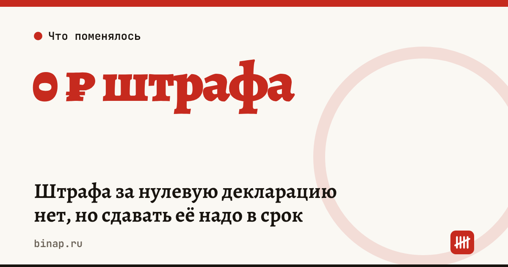

Штрафа за нулевую декларацию нет, но сдавать её надо в срок

Штраф по ст. 119 НК за позднюю сдачу «нулевых» деклараций отменён с 26 июня 2026 года. Но обязанность сдавать их в срок осталась, а при просрочке налоговая может приостановить операции по счёту — для бизнеса это часто хуже штрафа.
Коротко
- Закон от 26.06.2026 № 201-ФЗ: за просрочку декларации, по которой нет налога к уплате, штрафа нет с 26.06.2026.
- С 27.07.2026 по «ненулевой» декларации без других нарушений — упрощённая процедура: акт не составляют, решение выносят в течение пяти рабочих дней.
- Если декларацию не сдали, инспекция может приостановить операции по счетам.
- Штраф за просрочку декларации с налогом остался: 5% неуплаченной суммы за каждый полный или неполный месяц, не меньше 1 000 ₽ и не больше 30% (по Клерку).
Сроки, изменения и разборы для ИП и самозанятых — каждое утро в Telegram и MAX. Подпишитесь, чтобы не пропустить.
Что это значит
ИП и ООО без деятельности не заплатят штраф за опоздание с нулевой декларацией, но блокировка счёта по-прежнему возможна. Заблокированный счёт — это остановленные платежи поставщикам и зарплаты, пока вы не сдадите отчётность и инспекция не отменит решение.
Если в декларации есть налог, штраф сохраняется. Пример (расчёт редакции): налог 40 000 ₽ не уплачен, декларацию сдали на 2 месяца позже срока — 5% × 2 = 10%, то есть 4 000 ₽.
| Ситуация | Штраф по ст. 119 НК | Риск блокировки счёта |
|---|---|---|
| Нулевая декларация сдана с опозданием | нет (с 26.06.2026) | есть, пока не сдали |
| Декларация с налогом сдана с опозданием | 5% за месяц, от 1 000 ₽ до 30% | есть, пока не сдали |
| Всё сдано в срок | нет | нет |
Что сделать сейчас
- Составьте список деклараций, которые вы обязаны сдавать, включая нулевые, и поставьте напоминания. Сроки на следующий год — в налоговом календаре ИП на 2027 год.
- Если опоздали — сдайте как можно скорее, не дожидаясь блокировки счёта.
- Если штраф всё-таки назначили, проверьте, можно ли его снизить: смягчающие обстоятельства уменьшают штраф в несколько раз. Как спорить с решением — в инструкции как обжаловать решение налоговой.
- Следите за штрафами 2027 года: в Госдуме законопроект об их индексации — подробности в статье налоговые штрафы могут вырасти.
Частые вопросы
Можно вообще не сдавать нулевую декларацию? Нет. Закон отменил штраф, но не обязанность отчитываться.
А если опоздал до 26 июня 2026 года? Применяется ли отмена к прошлым случаям, уточните в своей инспекции: мы не нашли этого на открытой странице ФНС.
Как быстро разблокируют счёт после сдачи декларации? Инспекция отменяет приостановку после того, как получит декларацию; точный срок уточните в личном кабинете или в инспекции.